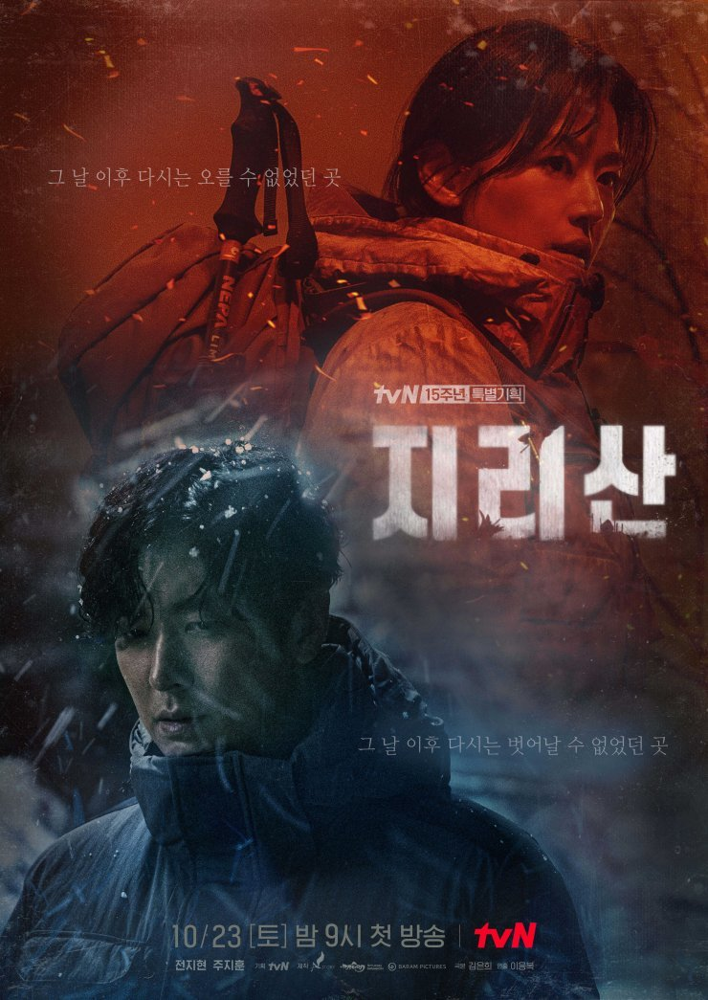
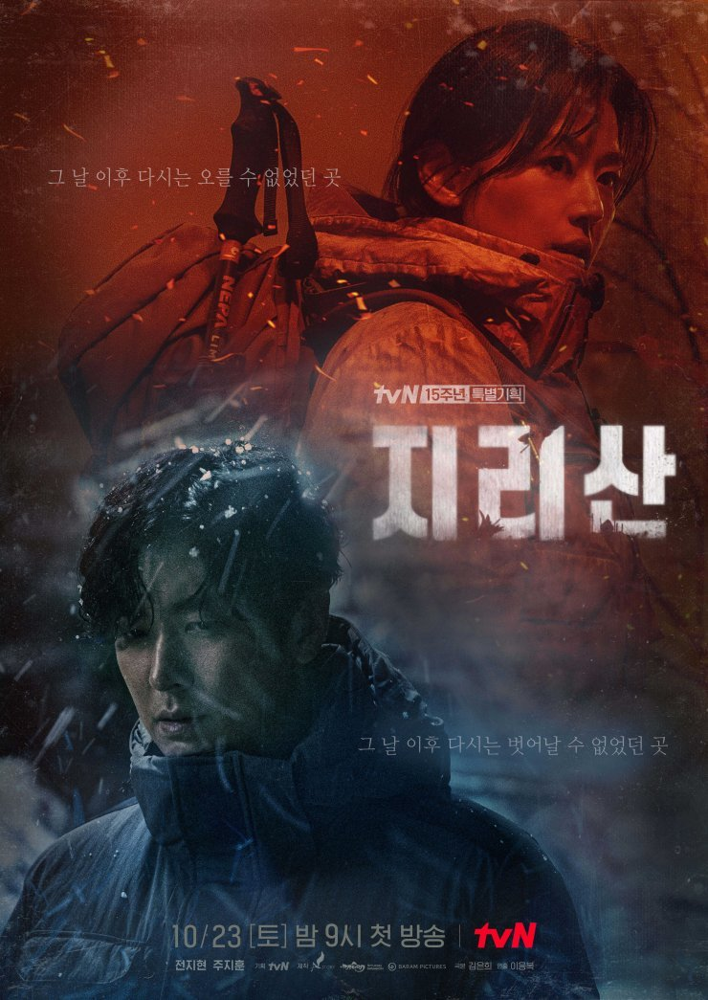

Assalamualaikum and hi everyone, I am fizah .. A very cheerful and approachable person, loves challenges, loves finding new experiences, and a positive person. For me, a positive circle can make us a positive person, so we should stay away from a negative circle. Next, i want to share about my hobbies and my leisure activities are mostly watching action or inspired movies on netflix or watching anime. One Piece is one of my favorite anime because the story teaches a lot and has a lot to do with family, friendships, life experiences, memories and more. Apart from that, I also love extreme activities such as horseback riding, hiking, archery, Atv sports and others..
 
